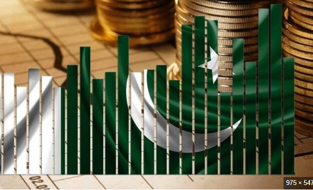

Introduction

Pakistan is an Islamic Republic located in South Asia. It shares borders with India, Afghanistan, Iran and China. Pakistan is known for its strong culture, history, mountains and hospitality.
History of Pakistan

Pakistan was created on 14 August 1947 under the leadership of Quaid-e-Azam Muhammad Ali Jinnah. It was established as a homeland for Muslims of the subcontinent.
Read Full HistoryCulture & Traditions

Pakistan has a rich culture including Punjabi, Sindhi, Pashtun and Balochi traditions. Famous foods include Biryani, Karahi, Nihari and Chapli Kebab.
Provinces of Pakistan
- Punjab
- Sindh
- Khyber Pakhtunkhwa
- Balochistan
- Gilgit Baltistan
- Azad Kashmir

Economy
Pakistan's economy includes agriculture, textile industry, IT services and CPEC development projects.
Learn More About Economy